33. Authoring the decisioning for the Call Center
With this lab, it is highly recommended to use DMN Runner and while you're building your model and the various custom data types to have the example right next to you. Taking advantage of the tools at hand will make your decision design much smoother and faster!
The problem statement describes a number of different inputs to our decision:
-
Call: the incoming call into the call-center
-
Employees: the employees of certain office.
-
Office: an office to which the call could potentially be routed.
Furthermore, the problem statement describes that phone numbers could be banned. So, also banned numbers can be regarded as an input to our model (although we will not implement it as an input in this lab).
With the given input, we need to make the following decisions:
- Accept Call: the final decision we need to make is whether the given office will accept the call.
- Can Handle Call: whether the office can actually accept the call. As defined in the problem statement, this depends on:
- whether the phone number has been banned;
- the purpose of the phone call (“help” or “objection”).
33.1 . Accept Call Decision Structure
-
Accept Call: the final decision we need to make is whether the given office will accept the call.
-
Add a Decision node to the diagram by clicking on the Decision node icon and placing it in the DRD.

-
Double-click on the node to set the name. We will name this node
Accept Call.
-
With the
Accept Callnode selected, open the property panel. Set the Output data type toboolean.
-
The input of this decision is the incoming call, office and employee. Create these 3 input nodes and connect them to the Accept Call decision.

-
We can now set data types of our input nodes.
-
Click on the
incoming callnode, open the property panel and in the Output data type section and click on the Manage button. This will open the Custom Data Types window.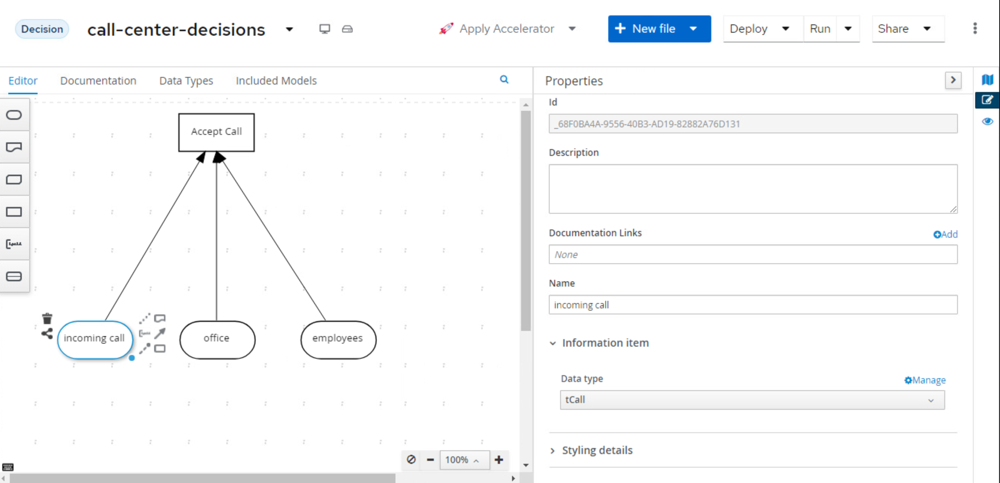
-
In the Custom Data Types window, click on the + Add button.
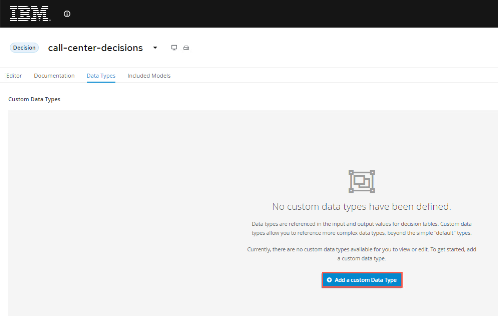
-
Define the data type
Phone Numberas a structure and be sure to press the blue checkmark.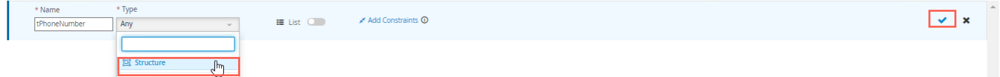
-
When you click the blue checkmark, a new row will open for the next type, for the first element, call it
phone numberwith typestringand then press the blue checkmark.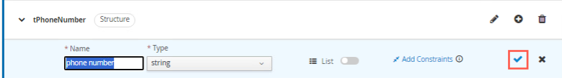
-
Now to create one more item, press the plus sign in the circle that appears where the checkmark was.

-
For this data type call it
country prefixwith a typestring. You can add a constraint to the limited values if you want, but not required, the example will use "+421" and "+420". These are more used for the forms rendering than anything else at this time. Make sure you check the blue checkmark when you're finished.
-
Define another data type
tCallas a Structure which will contain both thetPhoneNumberstructure and an additional fieldpurposeof typestring: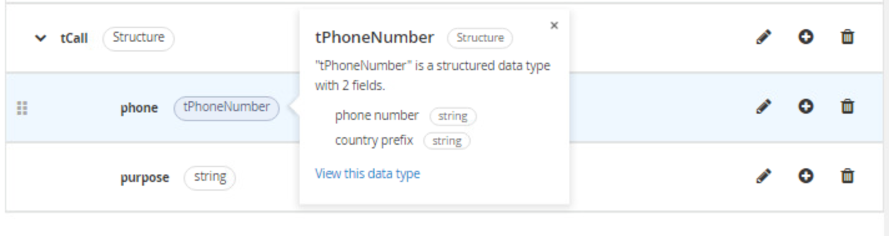
-
When you’ve created the
tCalltype, go back to the DRD by clicking on the Editor tab.
-
Select the
incoming callnode, and in the property panel, under Information item, set the node’s Output data type totCall
-
-
Next, define the following data type similar to
tCallcalledtOfficewith a fieldlocationand set it as the Output data type of theofficeinput as such:
-
Define the data type for
employeesas follows. Note that we’ve first defined the typetEmployee, and afterwards we’ve definedtEmployeesas aListoftEmployee.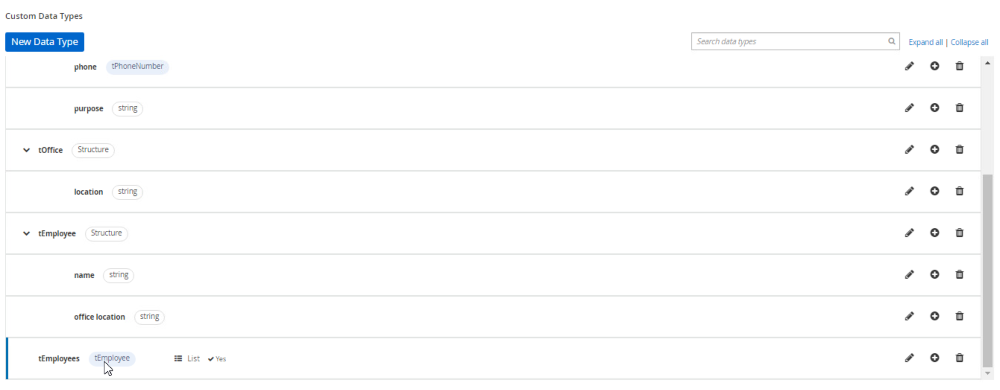
-
33.2 Decision Service
With the main structure defined, we can now look at the requirements of the decision whether the office can actually accept the call. As defined in the problem statement, this depends on:
-
whether the phone number has been banned.
-
the purpose of the phone call ("help" or "objection").
We will model this decision as a DMN Decision Service that can be called by our main decision Accept Call.
-
First, model the Decision Service in the DRD and give it the name
Can Handle Call. Set it’s Output data type toboolean.
-
Add a Decision Node to the Decision Service. Name it
Call Can Be Handledand set it’s Output data type toboolean.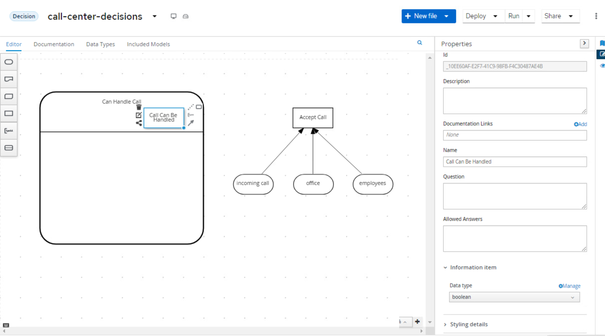
-
Add 2 additional Decision Nodes and name them
Is BannedandCall Purpose Accepted. Both should have an Output data type of typeboolean. These will be put "below the bar" on the Decision Service node, so the decisions will be evaluated, but the results will not be passed back from final service by default. -
Connect the 2 Decision Nodes to the
Call Can Be Handlednode.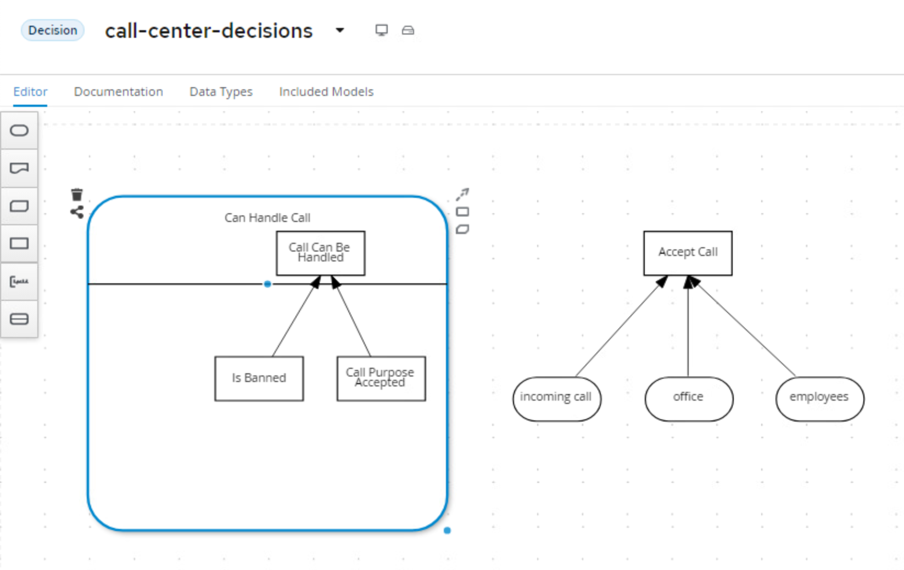
-
The input to both the
Is BannedandCall Purpose Accepteddecisions is going to be a separate item calledcall. You will create the input node calledcallwith data typetCall. While it will look like you're creating a separate call item here (and that is definitely how it looks), this decision service could be called independently of the whole service, which is why this call object can be used. Later in the lab, you will see how this ultimately works!
-
The
Is Banneddecision also needs a collection of banned phone numbers. Instead of implementing this as an Input node, we will implement this as a DMN Relation Decision.-
Create a new Decision Node and name it
Banned Phone Numbers. Connect it to theIs Banneddecision node.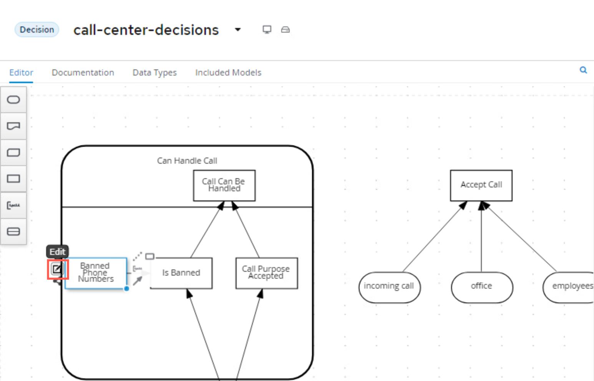
-
The Ouput data type of this nodes is a new custom data type, which is a list of
tPhoneNumber. We’ll name this typetPhoneNumbers, similar to howtEmployeeswas setup before: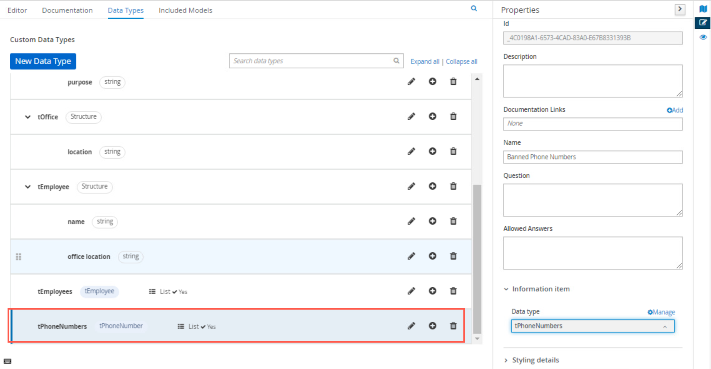
-
Click on the Edit button of the
Banned Phone Numbersnode. Set the logic type of the decision toRelation. Create the following table, you will need to add one extra column and use the headers as shown ofcountry prefixwith typestringandphone numberwith typestring: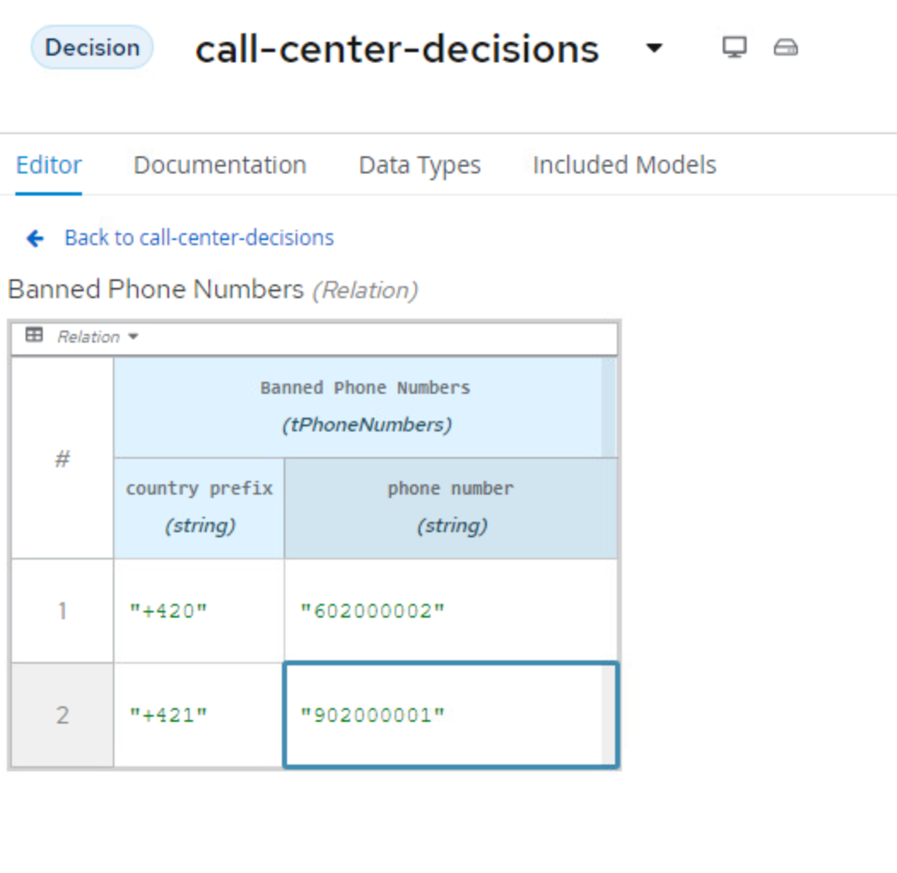
-
-
We can now implement the logic of the
Is Banneddecision. Click on the Edit button of the decision node. We will implement the logic as a Literal Expression. Define the following FEEL expression as below showing that we're going to take the Relational List fromBanned Phone Numbersand comparing it tocall.phonewhich is using the tCall's phone number input:
-
The next node for which we want to implement the decision logic is
Call Purpose Accepted. Click on the node, and click on the Edit button.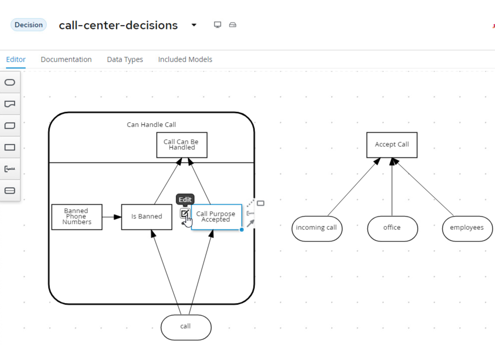
-
Implement the following logic as a Decision Table:
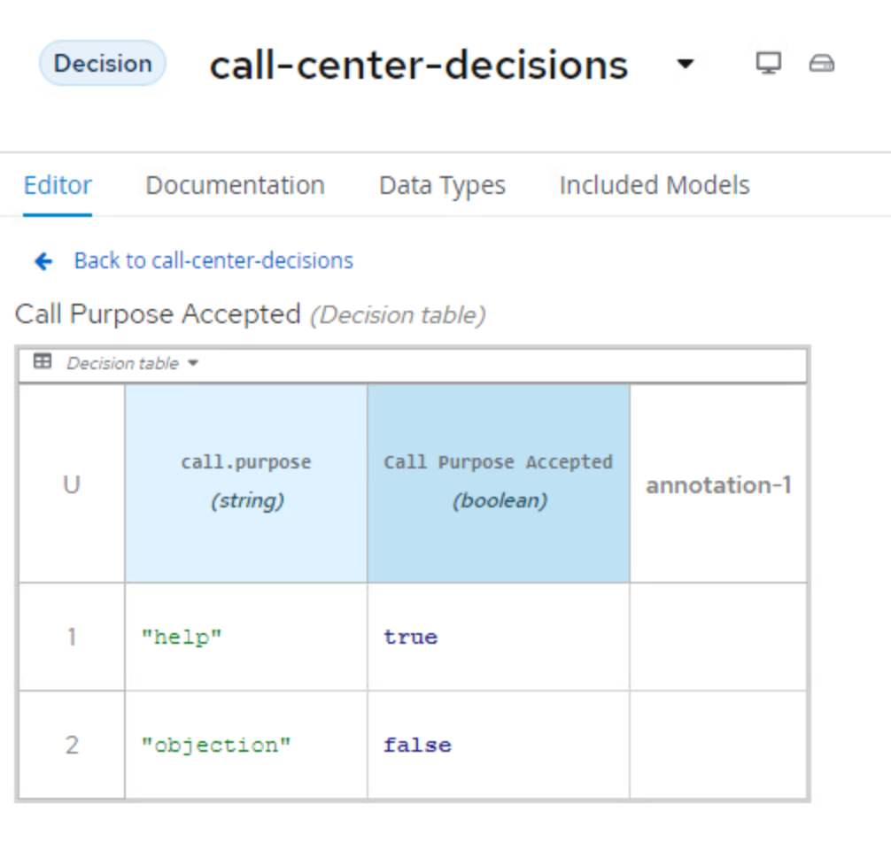
-
Click on the
Call Can Be Handlednode and click on the node’s Edit button.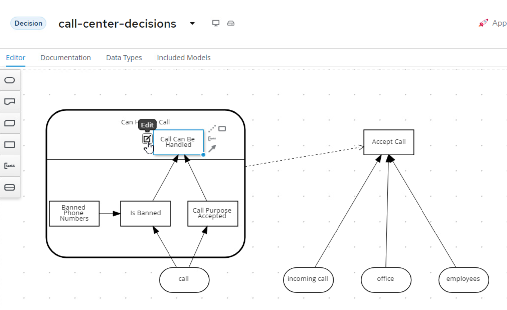
-
In the decision editor, click the Select expression to Decision Table and implement the following table:

-
We can now implement the decision of
Accept Call Decision. To do this we need to link the Decision Service to theAccept Call, to do this, you will click the outside of the Decision Service node and use theCreate DMN Knowledge Requirementto connect the Decision Service to theAccept Call.
33.3 "Accept Call" Decision Logic
-
Finally we need to Implement the
Accept Calldecision. This is going to be built as aContextsince this can be built as a boxed expression that will have multiple steps yielding the final decision to either Accept or Deny the call!
-
With the Context now the Decision Type. The first row is going to be
Call can be handledwith typeboolean.
-
Now we need to set the expression for the first row, this is going to be of type
Invocation.
-
For the invocation, we need to use it to call the Decision Service that was created.
-

Notice that the line 1 is the invocation of the decision service "Can Handle Call". This is an Invocation of the Can Handle Call service, passing the incoming call input as the variable call. The output of this invocation will be the boolean variable Call can be handled. This will be done using a Literal FEEL function to do this.
-
Next create a new line with a data type
Employee at the Officewith data typeboolean. Set the expression as another Literal expression. In this function, you will be mapping the Office locations of the employees who are working to the location of the office location. Since this is a list, you're essentially getting a collection of the employees office location and the location of the office that the call is coming from and trying to map them. -
After this is set, the last row,
<result>can be set with aLiteralexpression again with the following:
The Call can be handled variable as then used to validate the decision result in the last line.

33.4 Next steps
Next, we should deploy the project in OpenShift as a sample service.